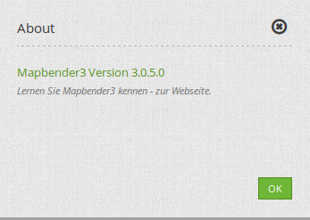
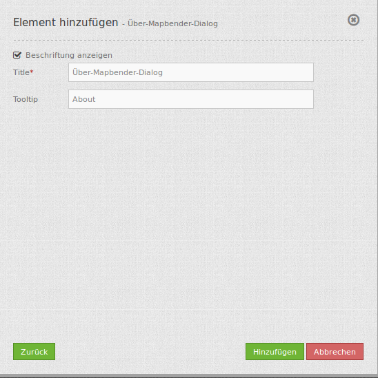

About Dialog (Über-Dialog)¶
Dieses Element rendert einen Button, der einen Dialog mit der aktuellen Mapbender Version anzeigt. Der Button kann im Standard-Tempalte wie gehabt in der Toolbar verwendet werden oder auch in die Footer Region positioniert werden.
{kind=link}
Konfiguration¶
{kind=link}
- Beschriftung anzeigen (Show label): Schaltet Text neben dem About Dialog Button ein/aus.
- Title: Text, der neben dem About Dialog Button angezeigt wird.
- Tooltip: Text, der erscheint wenn der Mauszeiger längere Zeit über dem Button gehalten wird.
YAML-Definition:¶
title: 'Über Mapbender3' # Text, der neben dem About Dialog Button angezeigt wird
tooltip: 'Über Mapbender3' # Text des Tooltips
label: true # false/true, um den Button zu beschriften. Der Standardwert ist true.
icon: 'abouticon' # Symbol für den Button
Class, Widget & Style¶
- Class: Mapbender\CoreBundle\Element\AboutDialog
- Widget: mapbender.mbAboutDialog
- Style: mapbender.elements.css
JavaScript API¶
Keine.
JavaScript Signals¶
Keine.